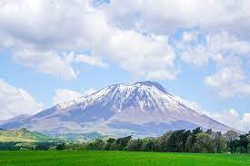

岩手山

岩手山は、「南部片富士」の名で知られる岩手県の最高峰、標高2,038メートルの秀峰です。
滝沢市の西北、八幡平国立公園の南西部に大きくすそ野を広げるコニーデ型の山です。有史以来5回の噴火による火山地形は日本でも珍しく、滝沢市からは、四季折々豊かな表情を見せる美しい岩手山の姿を どこからでも眺めることができ、ふるさとの山として愛されています。
毎年7月1日から始まる夏山シーズンには全国から多くの登山者が訪れ山頂を目指します。山頂付近には標高2,000メートル級の山には珍しい「コマクサ」の群生地があり、そのほかたくさんのきれいな高山植物が登山者を迎えてくれます。
山頂からの眺望は、岩木山や八甲田山、遠くは鳥海山を望むことができ360度のパノラマを楽しむことができます。
浄土ヶ浜

三陸復興国立公園・三陸ジオパークの中心に位置する浄土ヶ浜は、宮古の代表的な景勝地です。
鋭くとがった白い流紋岩が林立し、一つ一つ違った表情を見せて海岸を彩ります。松の緑と岩肌の白、海の群青とのコントラストはまさに一見の価値ありです。
浄土ヶ浜の地名は、天和年間(1681〜1683)に宮古山常安寺七世の霊鏡竜湖(1727年没)が、「さながら極楽浄土のごとし」と感嘆したことから名付けられたと言われています。
夏の浄土ヶ浜は、透明度が高く、穏やかな波が特徴で、海開き期間は、たくさんの海水浴客でにぎわいます。
龍泉洞

龍泉洞は日本三大鍾乳洞の一つとされ、また洞内に棲むコウモリと共に国の天然記念物に指定されています。
洞内総延長は知られている所で4,088mで、そのうち700mが公開中であり、見つかっている地底湖は8つで、そのうち3つが公開中です。
現在も調査が継続中で未知の部分もまだまだ多く、総延長は5,000m以上ではないかと言われています。
悠久の時が生んだ芸術品の様な鍾乳石たち。
世界有数の透明度の目の覚めるような青い地底湖。
龍泉洞は一度見れば忘れられない感動を味あわせてくれることでしょう。